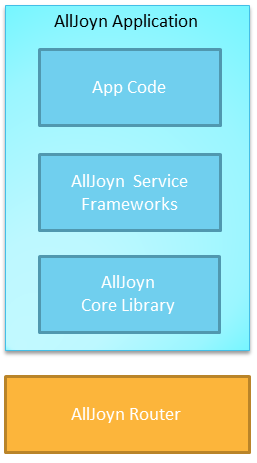
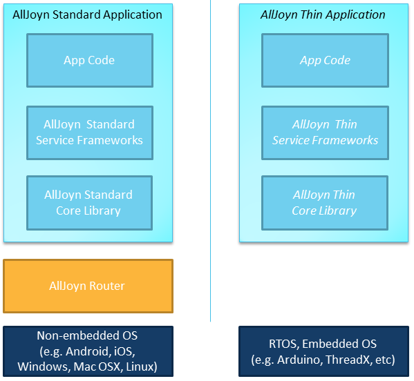

结构
网络结构
The AllJoyn™ framework runs on the local network. It enables devices and apps to advertise and discover each other. This section explains the network architecture and the relationship between various AllJoyn components.
AllJoyn™架构在本地网络上运行，使设备和应用程序能够发送通知并且发现彼此。本章解释了 Alljoyn 的网络结构和不同 AllJoyn 组件之间的关系。
Apps and Routers 应用和路由
The AllJoyn framework comprises AllJoyn Apps and AllJoyn Routers, or Apps and Routers for short. Apps communicate with Routers and Routers communicate with Apps. Apps can only communicate with other Apps by going through a Router. AllJoyn 架构包含了 Alljoyn 应用和 AllJoyn 路由，简称应用和路由。应用和路由之间可以相互通信。应用只能通过路由来与另一个应用进行通行。
Apps and Routers can live on the same physical device, or on different devices. From an AllJoyn perspective, it doesn't matter. In reality, three common topologies exist: 应用和路由可以属于同一个物理设备，也可以分布在不同的设备上。从Alljoyn 的角度来看，这没有很大区别。在现实中，存在三个常见的拓扑: 1. An App uses its own Router. In this case, the Router is called a "Bundled Router" as it is bundled with the App. AllJoyn Apps on mobile OSes like Android and iOS and desktop OSes like Mac OS X and Windows generally fall in this group. 1. 单一应用程序使用自己的路由。在这种情况下，根据路由与应用之间的绑定关系，路由被称之为“绑定路由”。在如 Android 和 IOS 的手机操作系统，以及如 Mac OS X 和 Windows 的桌面操作系统上运行的 Alljoyn 应用通常都属于“绑定路由”的情况。
- Multiple Apps on the same device use one Router. In this case, the Router is called a "Standalone Router" and it typically runs in a background/service process. This is common on Linux systems where the AllJoyn Router runs as a daemon process and other AllJoyn apps connect to the Standalone Router. By having multiple apps on the same device use the common AllJoyn Router, the device consumes less overall resources.
- 在同一设备上的多个应用程序使用一个路由。在这种情况下，这个路由被称之为”独立路由器“，它通常在后台/服务进程中运行。这样的情况多发生在 Linux 系统中。在 Linux 系统中，AllJoyn 路由作为守护进程运行，Alljoyn 应用被连接到独立路由器。通过把同一设备上的多个应用连接到一个通用路由上，设备减少了总体资源的消耗。
- An App uses a Router on a different device. Embedded devices (which use the Thin variant of the AllJoyn framework, more on this later) typically fall in this camp as the embedded device typically does not have enough CPU and memory to run the AllJoyn router.
- 某个应用使用不同设备上的路由。嵌入式设备（通常使用精简 AllJoyn 架构，之后会具体说明）通常属于这个类型。因为嵌入式设备通常没有足够强大的 CPU 和 内存来运行 AllJoyn 路由。

Transports 传输
The AllJoyn framework runs on the local network. It currently supports Wi-Fi, Ethernet, serial, and Power Line (PLC), but since the AllJoyn software was written to be transport-agnostic and since the AllJoyn system is an evolving open-source project, support for more transports can be added in the future. AllJoyn 架构在本地网络上运行。目前它支持 Wi-Fi, Ethernet, serial, 和 Power Line (PLC)。不过由于 AllJoyn 软件是协议不相关的，并且 AllJoyn 系统是在不断完善的开源工程。在未来，更多的传输方式将被加入其中。
Additionally, bridge software can be created to bridge the AllJoyn framework to other systems like Zigbee, Z-wave, or the cloud. In fact, a Working Group is working on adding a Gateway Agent as a standard AllJoyn service. 除此之外，使用桥程序，可以将 AllJoyn 架构与其他类型的系统互联，如 Zigbee, Z-wave 和云。实际上，有一个工作组正在负责向标准 AllJoyn 服务中加入一个网关代理。
Software Architecture 软件结构
The AllJoyn network comprises AllJoyn Applications and AllJoyn Routers. AllJoyn 架构包含了 Alljoyn 应用和 AllJoyn 路由。
An AllJoyn Application comprises the following components: 一个 AllJoyn 应用程序包含了以下组件： AllJoyn App Code AllJoyn Service Frameworks Libraries * AllJoyn Core Library
AllJoyn Router can either run as standalone or is sometimes bundled with the AllJoyn Core Library. AllJoyn 路由 既可以是独立的，也可以绑定到 AllJoyn 内核资源库。

AllJoyn Router AllJoyn 路由
The AllJoyn router routes AllJoyn messages between AllJoyn Routers and Applications, including between different transports. AllJoyn 路由负责转发其与应用之间的 AllJoyn 信息，包括不同传输方式之间的信息。
AllJoyn Core Library AllJoyn 核心资源库
The AllJoyn Core Library provides the lowest level set of APIs to interact with the AllJoyn network. It provides direct access to: AllJoyn 核心资源库提供了与 AllJoyn 网络互联的最低级别的 API。它为以下内容提供了直接访问方式：
- Advertisements and discovery
- Session creation
- Interface defintion of methods, properties, and signals
- Object creation and handling
- 通知和发现
- 建立会话
- 接口定义的方法、 属性和信号
- 对象的创建和处理 Developers use these APIs to implement AllJoyn service frameworks, or to implement private interfaces. 开发人员使用这些 API 来实现 AllJoyn 服务架构，或建立专用接口。 Learn more about AllJoyn Core Frameworks. 了解更多关于 AllJoyn 核心架构.
AllJoyn Service Framework Libraries AllJoyn 服务框架资源库
The AllJoyn Service Frameworks implement a set of common services, like onboarding, notification, or control panel. By using the common AllJoyn service frameworks, apps and devices can properly interoperate with each other to perform a specific functionality. AllJoyn 服务架构提供一套通用服务，例如管理、通知和控制面板。通过使用通用 AllJoyn 服务架构，应用和设备能够进行协作，实现特定的功能。
Service frameworks are broken out into AllSeen Working Groups: 服务架构被分为如下工作组：
- Base Services
-
Onboarding. Provide a consistent way to bring a new device onto the Wi-Fi network.为新设备加入 Wi-Fi 网络提供一个统一的方式。
-
Configuration. Allows one to configure certain attributes of an application/device, such as its friendly name.允许用户设置应用／设备的特定属性，如它的别名。
-
Notifications. Allows text-based notifications to be sent and received by devices on the AllJoyn network. Also supports audio and images via URLs.允许基于文本的通知在 AllJoyn 网络中的收发。通过URL，也支持声音和图像。
-
Control Panel. Allows devices to advertise a virtual control panel to be controlled remotely.允许设备广播一个虚拟的控制面板以被远程控制。
-
More Service Frameworks. More service frameworks are actively being developed by the AllSeen Working Groups.Allseen 工作组正在积极开发更多的服务架构。
Developers are encouraged to use AllJoyn Service Frameworks where possible. If an existing service is not available, then the developer is encouraged to work with the AllSeen Alliance to create a standard service. In some cases, using private services and intefaces makes the most sense; howerver, those services would not be able to interoperate and take advantage of the larger AllJoyn ecosystem of devices and apps. 如果条件允许，我们鼓励开发者尽可能地使用 AllJoyn 服务架构。如果现有的服务无法满足需求，那么我们鼓励开发者与 Allseen 联盟共同建立一个标准服务。在某些情况下，使用私有服务和接口或许最能解决问题。然而，这些私有服务将不能与更大的 AllJoyn 生态系统的设备和应用进行互通。
AllJoyn App Code AllJoyn 应用代码
This is the application logic of the AllJoyn application. It can be programmed to either the AllJoyn Service Frameworks Libraries, which provide higher level functionality, or the AllJoyn Core Library, which provides direct access to the AllJoyn Core APIs. 这是 AllJoyn 应用的应用逻辑。它既可以用 AllJoyn 服务看架构资源库进行编写以实现更高级的功能，可以用与核心 API 有直接联系的 Alljoyn 核心资源库。
Thin and Standard 精简与标准
The AllJoyn framework provides two variants: AllJoyn 架构提供了两种版本选择：
- Standard. For non-embedded devices, like Android, iOS, Linux.
- Thin. For resource-constrained embedded devices, like Arduino, ThreadX, Linux with limited memory.
- 标准版 适用于非嵌入式设备, 如 Android, iOS, Linux。
- 精简版 适用于资源受限的嵌入式的设备，如 Arduino, ThreadX, 内存较小的Linux.

Programming Models 编程模型
Typically, applications will be written using the AllJoyn Service Framework APIs so that the applications can be compatible with devices using the same Service Frameworks. Only by using AllJoyn Service Frameworks developed by AllSeen Working Groups will the application be compatible with other applications and devices in the AllSeen ecosystem. 通常，建议使用AllJoyn 服务架构 API来编写应用程序，这样便于与使用相同服务架构的设备相兼容。只有使用 AllSeen 工作组开发的 Alljoyn 服务框架编写的应用程序才能与 Allseen 生态系统中的其他应用或设备相兼容。
If an application wishes to implement its own service, it can do so by programming directly to the AllJoyn Core APIs. When doing so, it is recommended to follow the Events and Actions convention to enable ad hoc interactions between other AllJoyn devices. 如果应用希望推出它们自己的服务，可以通过直接向 AllJoyn 核心API编程来实现。如果这样做，建议遵守 Events and Actions 规则以实现应用与其他 AllJoyn 设备间的临时通信。 The application can use both the Service Framework and Core APIs side by side. 应用程序可以同时使用服务架构与核心 API。